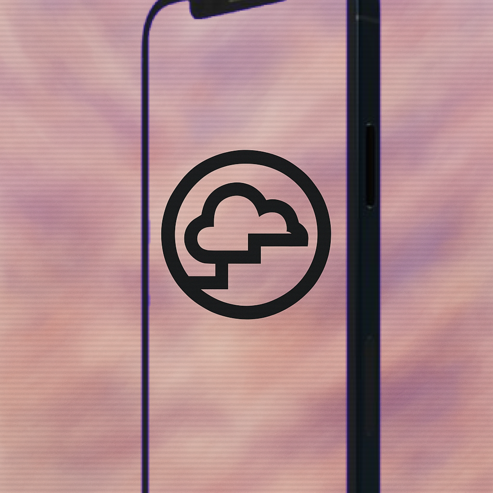
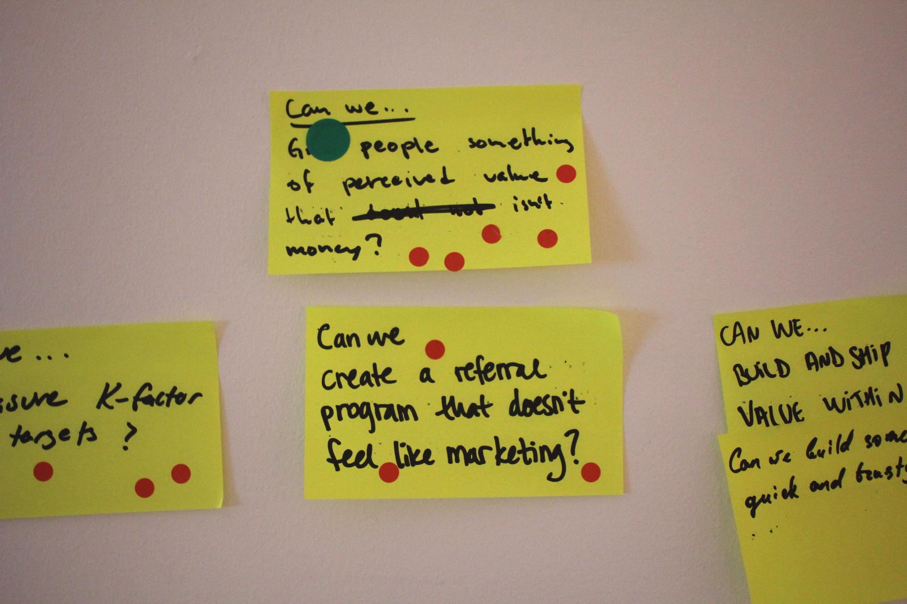
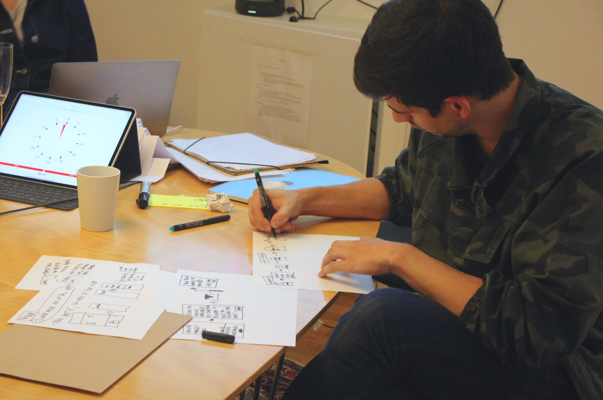
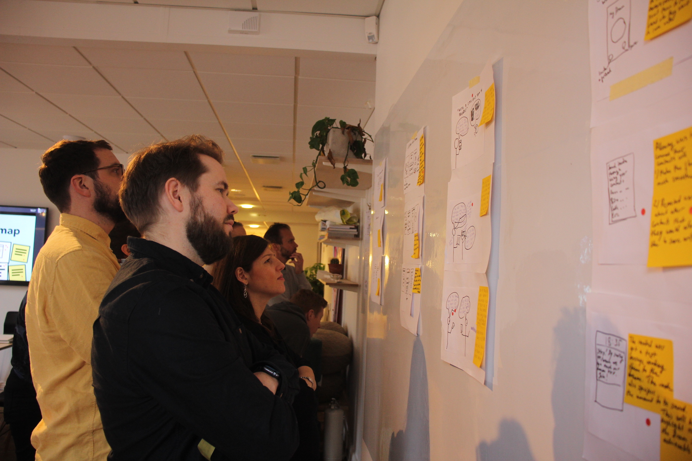
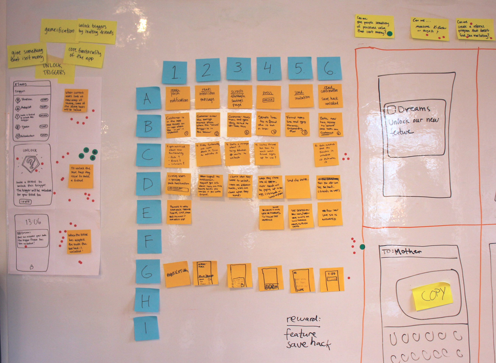
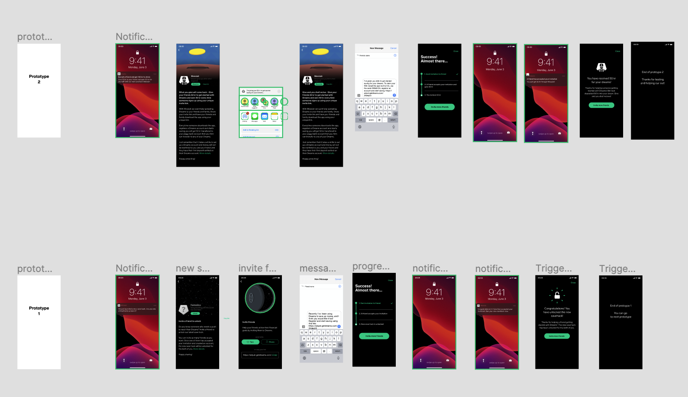
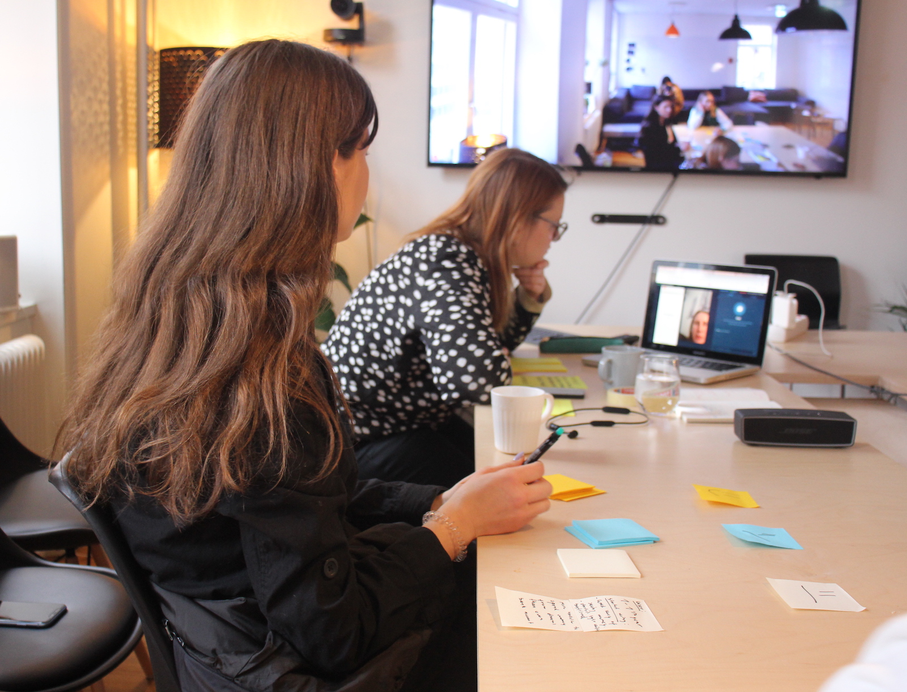
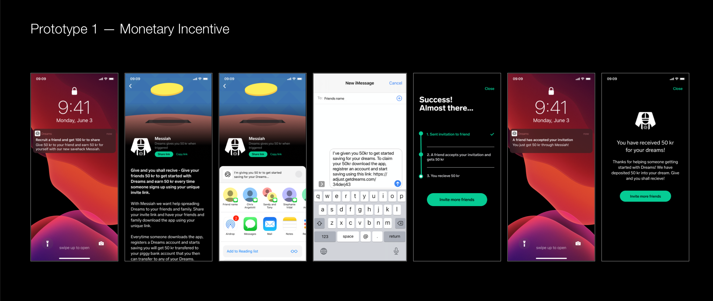
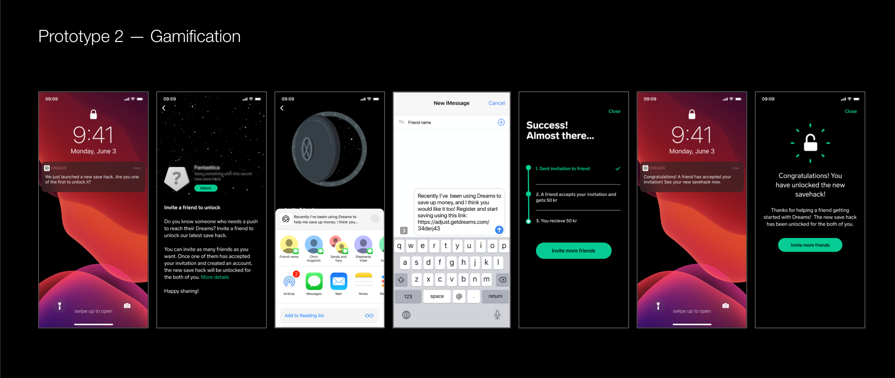
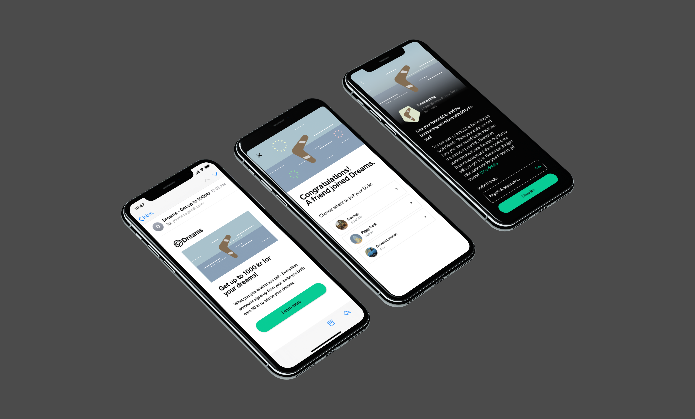

The best referral is one that doesn't feel like one
Dreams is a fintech app helping people save toward personal goals. They wanted to grow through their existing users rather than traditional marketing - so they brought us in to figure out how. I planned and facilitated a 4-day design sprint, moving the team from open questions to a tested prototype ready for implementation.

● EXPERT INSIGHTS
We started with expert interviews with key people at Dreams where we mapped pain points, opportunities - then reframed them as "can we…?"-questions to focus the sprint. By end of day, we had a shared long-term goal and a set of sprint questions to guide everything that followed.

● SKETCHING IDEAS
The afternoon moved into idea generation. I facilitated a series of sketching exercises - note-taking, Crazy 8s, rapid ideation. For several participants, this was a new way of working, so part of my role was creating enough psychological safety to keep the pace without losing the room. Each team member left with one developed concept.

● CONCEPT EVALUTION
Concepts were anonymized and pinned up for silent critique. Dot-voting surfaced two clear directions: one built around monetary rewards, one around playful gamification. Running two concepts in parallel added complexity, but gave us something more useful - a genuine comparison to take into testing.

● STORYBOARDING & USER FLOWS
With the two concepts selected, we moved into collaborative storyboarding - mapping each into a detailed user flow that the design team could prototype directly from. The dual-track approach demanded precision here; loose storyboards would have cost us time we didn't have on day three.

● PROTOTYPING
The design team built out both prototypes in Figma, working closely from the storyboards. Rapid UI decisions were inevitable at this pace — Dreams' existing design system kept things consistent and cut down decision fatigue considerably. Simultaneously, we reached out to recruit participants for the following day's testing.

● TESTING
Both prototypes were tested remotely, with participants sharing their screens while moving through the flows. What came back was specific, useful, and sometimes surprising.


The monetary prototype resonated most — users found it clear, motivating, and transparent in its value exchange.
The gamification prototype generated curiosity, particularly through its "unlock to reveal" mechanic, but lacked urgency. something that showed up in both completion rates and willingness to refer. That said, the reveal mechanic itself showed real potential as a way to surface other content like savings tips — rather than as a referral hook.
A few other things stood out:
● Referrals worked better when users could see what their friends were saving for. A trip, a purchase, something concrete - social proof through shared goals felt more compelling than a generic invite.
● People preferred dropping a link into an existing group chat over sending a pre-written message. It felt more natural, less like a marketing campaign.
● Personal messages outperformed pre-written ones. Users wanted to sound like themselves.
● Seeing money arrive in real time was a strong motivator for continued engagement and sharing.
● In-app notifications were trusted more than push notifications.

● Dreams launched the referral program in the Norwegian market with success.
● Our team was invited back to present the sprint methodology and findings to the full organisation.
● The sprint methods and exercises we introduced were adopted into their internal ways of working.